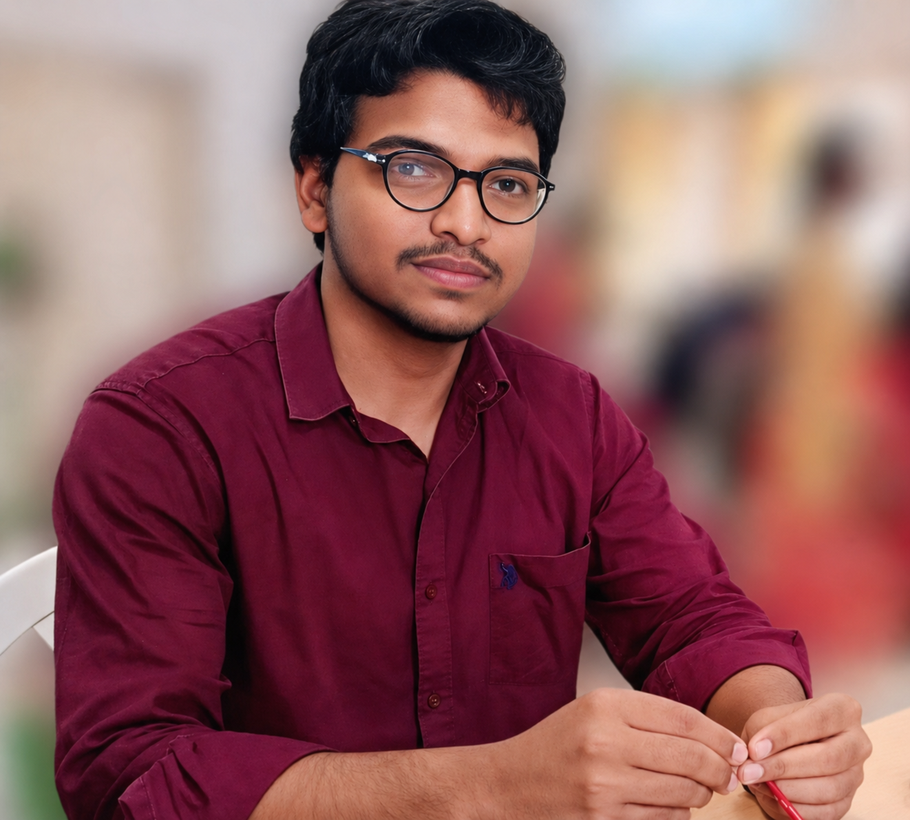

Passionate about Embedded Systems, IoT, Linux, Embedded C, ARM, RTOS, TCP/IP and AI.
Download Resume
I am an Electronics and Communication Engineering student with strong interest in Embedded Systems, Linux, Embedded C, ARM, RTOS, IoT and Artificial Intelligence. I enjoy learning new technologies and building practical projects.
Developed an intelligent vehicle safety system using ESP32 for alcohol detection, driver drowsiness monitoring, and accident detection. The system improves road safety by providing alerts and preventing accidents through real-time monitoring.
Created a digital menu system that displays food items, categories, and prices electronically. It helps restaurants update menus easily, reduce paper usage, and improve customer convenience.
Developed a motion detection system using a PIR sensor to detect human movement. The system provides automatic detection and can be used for security and smart automation applications.
Developed an ultrasonic sensor-based system for vehicles to measure the distance between the car and obstacles. The project helps in obstacle detection, parking assistance, and improving vehicle safety.
Developed a smart room monitoring system using temperature, moisture, and gas sensors to monitor environmental conditions. The system helps detect changes in room parameters and improves safety and comfort through real-time monitoring.
Gained hands-on experience in Embedded C, microcontrollers, sensor interfacing, and embedded system development.
Completed an internship in Embedded Systems and IoT, gaining hands-on experience in microcontrollers, sensor interfacing, and embedded application development.
Learned Python programming fundamentals, problem-solving, and developed basic applications using Python.
Completed B.Tech in Electronics and Communication Engineering with a strong interest in Embedded Systems, IoT, and automation technologies.
Completed Diploma in Electronics and Communication Engineering, gaining practical knowledge in electronics, microcontrollers and circuit design.
Successfully completed secondary education with a strong foundation in mathematics, science, and computer fundamentals.
syedmahammadyezaz@gmail.com
+91 7382781187
www.linkedin.com/in/sd-md-yezaz-5a7760322
https://github.com/SDMDYEZAZ